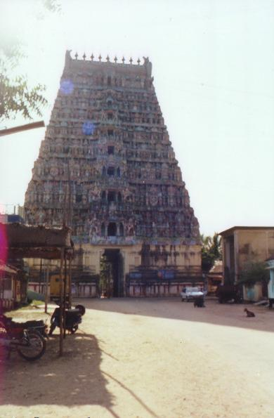
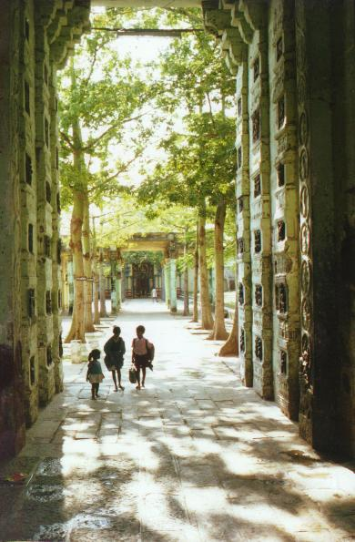
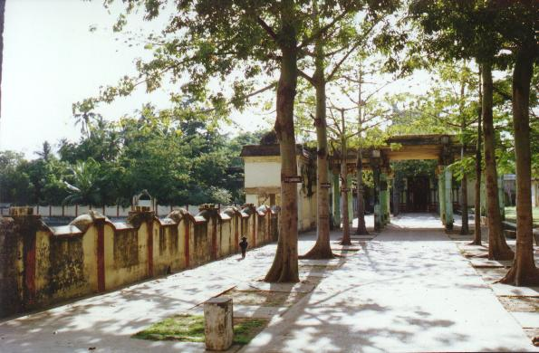

mayilāṭutuṟai
- Identifier: KT039
- Modern Name (NIC):
- Modern Name (M.I.): māyavaram
- Modern Name (Govt Press): māyavaram
- Modern Name: Mayilāṭutuṟai
- Alternate Name: Māyūram
- Modern District & Taluk: nākappaṭṭiṉam DT (mayilāṭutuṟai TK)
- Old administrative location: Tanjore DT (Mayavaram TK)
- Visit date: 2000/02/11 (JLC & Shariff)
- GPS reading: 11deg. 06' N & 79deg. 39' E
- Nearby town: Mayilāṭutuṟai
- Railway station: Mayilāṭutuṟai
- Longit. 79 deg. 39'; Latit. 11 deg. 06' [KT039]
- C.D.Maclean-3: entry: MAYAVARAM (2), p. 497, col. 1,
[Has a large temple, Mayooranauta sawmy, and is one of the chief seats
of Brahmanical religion in the district,
lat. 11deg. 06', long. 79deg. 42']
- Location: according to PK: Cōḻa Nāṭu, Kāvēri Teṉ Karai (KT039)
- Name inside hymns:
- Name inside PK:
- Rank inside third volume of PIFI: 225
- Rank inside Civastala Mañcari: 224
- Rank on PY576 map:
- Total number of patikam-s: 3
- Campantar: 2 patikam
- Appar: 1 patikam
8 pictures taken on 2000/02/11 (by JLC)





- Patikam 1_38
- Patikam 3_70
- Patikam 5_39